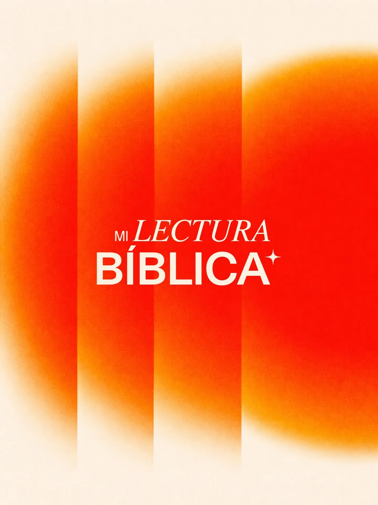
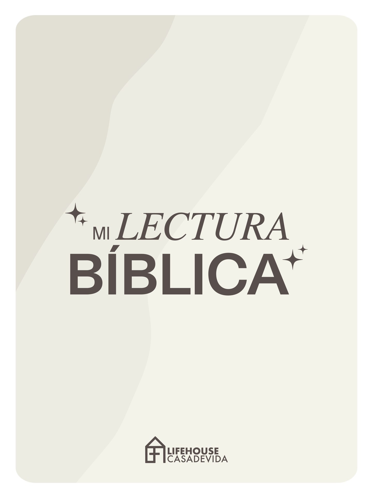

La Biblia transforma nuestra vida cuando la vivimos cada día. Descubre los planes de lectura de LifeHouse y acompáñanos a recorrer juntos las Escrituras. Cada plan está diseñado para ayudarte a conocer más a Dios y fortalecer tu fe.

Cada día, un capítulo. Una reflexión y una aplicación práctica para vivir la Palabra.
¿Cómo reacciono en momentos de dificultad? Pablo y Silas en la cárcel no respondieron con queja sino con adoración. La dificultad reveló la fe que llevaban dentro.
Escucha una alabanza en un momento difícil del día. Permítele a la adoración cambiar tu perspectiva antes que cambien las circunstancias.
El concilio de Jerusalén muestra que la iglesia resuelve sus tensiones con diálogo, Escritura y oración. No con poder sino con humildad colectiva.
En algún conflicto o diferencia que tengas hoy, busca primero escuchar. Dale espacio a la perspectiva del otro antes de responder.
Pablo fue apedreado y dejado por muerto, pero se levantó y continuó. La perseverancia misionera no depende de las condiciones sino del llamado.
¿Hay algo que has dejado de hacer porque fue difícil una vez? Vuelve a intentarlo hoy con oración, recordando que Dios va contigo.
El Espíritu Santo separó a Bernabé y Saulo mientras ayunaban y oraban. La misión nace de la intimidad con Dios, no solo del entusiasmo humano.
Toma 5 minutos hoy para estar en silencio ante Dios. Pregúntale a qué te está llamando en esta temporada. Escribe lo que venga a tu corazón.
La iglesia oraba intensamente por Pedro mientras él dormía en paz en la cárcel. La oración de la comunidad sostiene a los que están en los momentos más oscuros.
Ora hoy por alguien de la iglesia que esté pasando por una situación difícil. Envíale un mensaje haciéndole saber que estás orando por él/ella.
El contenido de mañana estará disponible a partir del Viernes 10 de Abril. Está leyendo Hechos 17 — Pablo en Berea y Atenas.
Pablo en Corinto — Aquila, Priscila y la perseverancia en el ministerio. Disponible el sábado 11 de Abril.
"Ellos respondieron: Cree en el Señor Jesucristo, y serás salvo tú y tu casa."Hechos 16:31
Cada libro que completamos como familia nos ha transformado. Estos son los evangelios que ya recorrimos juntos en LifeHouse.




Escucha la Palabra donde estés. Accede a las enseñanzas compartidas cada domingo en LifeHouse. Encuentra series, mensajes y recursos para seguir creciendo en tu relación con Jesús durante la semana.
Crecer es caminar junto a alguien. El discipulado GBE es el proceso mediante el cual acompañamos a las personas a desarrollar una relación más profunda con Jesús, afirmando su fe y ayudándolas a vivir como discípulos. Si deseas comenzar este proceso, puedes solicitar un discipulador.
Quiero ser discipuladoLa oración es el fundamento de todo lo que hacemos. De lunes a viernes nos reunimos como iglesia para interceder y buscar juntos la presencia de Dios. Estas reuniones se realizan a través de nuestro grupo de WhatsApp y están abiertas para toda la iglesia.
Apartamos un tiempo para buscar a Dios con todo nuestro corazón. Cada jueves nos reunimos para un tiempo especial de ayuno y oración, creyendo que Dios sigue obrando cuando su pueblo lo busca con humildad y perseverancia.
Sigue creciendo con recursos diseñados para tu formación. En esta sección encontrarás cursos bíblicos y materiales de enseñanza desarrollados por LifeHouse para fortalecer tu conocimiento de la Palabra y acompañarte en cada etapa de tu caminar con Jesús. Podrás acceder a las clases, recursos y contenido desde un mismo lugar.
🚀 PróximamenteAv. Ecuador 2211, subsuelo • La Paz, Bolivia